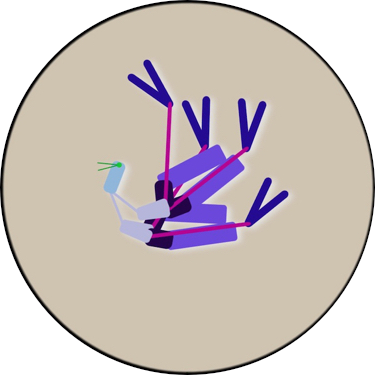

Fun with evolution
Maintained by Nusco

Narjillos are artificial creatures that mutate and evolve in a virtual microscope dish, under the pressure of natural selection. They swim to reach food, but they don't really know what "swimming" means - they just swing their bodies around. Yet, they evolve good swimming behaviours over time.
If you have Java 8 installed, you can put a dish full of narjillo eggs under your microscope. Download Narjillos 0.6.0, unzip it somewhere, and run sh narjillos. See those eggs? They'll hatch in a minute.
Move around with your cursor keys, or just click and drag. Zoom in/out by scrolling or pinching. To track a specific object or creature, double-click on it; to stop tracking, click somewhere else.
To crank up the speed, press P. To slow down, press O.
To turn the lamp on/off, press L. With the lamp off, high speed is faster (because the program doesn't need to render the creatures).
If you have trouble distinguishing the shapes of narjillos, try infrared light. It makes shapes more visible, but it hides colors. You can toggle infrared light by pressing I.
There are three main ingredients to the Narjillos recipe: phenotypic variation, selection and mutation. They're simpler than they sound.
When you start an experiment, the program generates a few hundreds eggs. Each egg contains a strand of DNA—a random sequence of byte-sized "genes", organized into "chromosomes".
Inside the egg, the DNA goes through a process called "embryology", which generates the body of a narjillo. Each chromosome generates a segment in the body, and the genes in the chromosome dictate that segment's appearance and behavior: its size, its color, how fast it moves, and so on.
The DNA is also called the genotype, and the body is also called the phenotype—so you can say that "the genotype generates the phenotype". Identical genotypes always generate identical phenotypes. Similar genotypes tend to generate similar phenotypes. Very different genotypes tend to generate very different phenotypes.
All the eggs are placed on a dish under your microscope. They soon hatch, giving birth to cute little baby narjillos. The babies are small in the beginning, but they keep growing until they reach their adult form. The dish also contains food—the red dots. More food keeps spawning as the experiment continues.
Narjillos try to reach the food by swimming. You can look at their "mouths" (the thin green lines) to see which direction they're aiming at. Narjillos don't think—they just oscillate mechanically in response to the direction of their target. These oscillations push them around in the dish.
Some narjillos are decent swimmers, but most are not. You'll see many who cannot even move, or move in the opposite direction they're aiming at. Narjillos who can't reach food will eventually exhaust their energy and die.
Narjillos that are bigger or quicker have the potential to reach food faster, but also consume more energy. The maximum energy of a narjillo also decreases with age, so even narjillos who can't move will eventually lose energy and die. Look at a narjillo's eye color to get a clue about its energy level. Fully healthy narjillos have a bright green eye, that becomes darker as they get exhausted. Also, they become transparent once they're nearing death.
(A note for Artificial Life connoisseurs: narjillos have no "fitness function". The fitter narjillos are simply the ones that happen to be better at reaching food).
Each time a narjillo eats a piece of food, its energy rises. If it has enough energy, the narjillo lays an egg that contains a copy of its genotype. The egg hatches after a short while, giving birth to the phenotype—a new baby narjillo.
Here is a twist: the genotype in the egg is not a perfect copy of the parent's. Instead, it contains random errors (called "mutations"). Because of mutations, a child could have a slightly different body shape, movement style, or color than its parent's. However, the child is still going to resemble the parent, because it has a similar genotype. As grandma used to say, "the apple doesn't fall far from the tree".
Phenotypic variation, Selection, Mutation... done! Now that we have the three ingredients, let's put them together.
Because of phenotypic variation, some narjillos are better swimmers than others. Because of selection, the better swimmers tend to survive longer than the worse swimmers, and thus reproduce more. The offspring of good swimmers tend to be themselves good swimmers—but because of mutation, they can be a little better, or worse, than their parents. The better offspring tend to survive longer and reproduce faster than the worse offspring, and the cycle continues: generation after generation, the bad swimmers tend to go extinct, while the good swimmers live to generate even better swimmers.
We have a single word to describe this entire process: evolution.
After a few tens of minutes of running an experiment (at high speed), you'll likely see one "species" of narjillos emerge and slowly take over the pond, while less successful species go extinct. As the experiment goes on, possibly for a few hours, this dominating genome will subtly mutate to generate bodies that are better and better at swimming. Eventually, you'll see creatures that are pretty damn good at moving around the dish.
These creatures are neither a result of my design, nor emerging by blind luck. On the one hand, I didn't design the individual creatures—I just designed the environment where they can evolve. On the other hand, you probably won't be able to generate good swimmers by shuffling genes randomly. There are literally more possible narjillo bodies than grain of sands in a desert—vastly more so—and only a few of them are good at swimming. This is neither a case of intelligent design, nor a case of blind luck. The narjillos are evolving their ability to swim well.